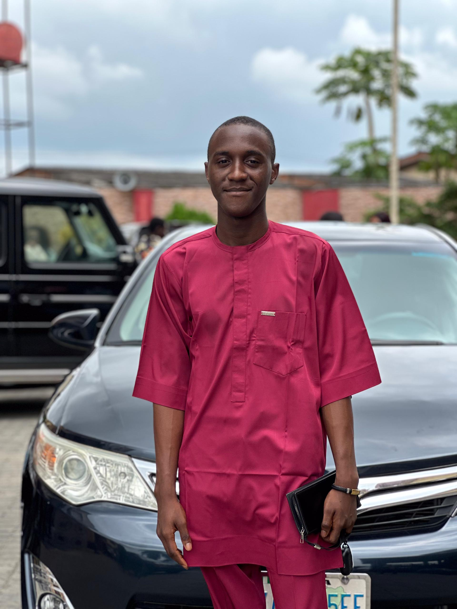

Aire Michael

Summary
I am a passionate web developer in training eager to learn and grow in software engineering.
I enjoy building projects and solving problems through technology.
Education
- High school Certificate : Nana Model College (2023)
Work Experience
ICT Aprrentice- Chudgin Nig Ltd, Warri, Delta state
July 2023- september 2023
- Worked as an ICT aprrentice,learning under experience technicians.
- Gained hands on training in computer handware repairs and system maintainace.
- Installed and configured software applications and operating systems(Windows,Ubuntu,Linux).
- Built foundational knowledge in trobuleshooting and hardware setup.
Cisco IT Essentials Course (in collaboration with Industrial Training Fund – ITF) Abuja, Nigeria
September 2024- December 2024
- Completed the Cisco IT Essentials course, focusing on computer and network fundamentals.
- Studied and practiced:
- Networking Fundamentals and contectivity setup
- Computer hardware repairs and maintainace
- software and operating system installation(Windows,Linux,Ubuntu)
- Basic virtualization and cloud computing concepts
ICT Industrial Attachment (Hands-On Training in collaboration with Industrial Training Fund – ITF) Ausido Computers — Warri,Delta state,Nigeria.
December 2024- Febuary 2025
- Completed a 3-month industrial attachment as part of the IT Essentials training.
- Worked under supervision on computer diagnostics, repairs, and maintenance.
- Installed and configured software applications and operating systems.
- Strengthened practical ICT skills through real-world projects and client support.
Skills
- Computer hardware repair and maintenance
- Operating system and software installation
- Basic networking setup and troubleshooting
- Sound system connection and setup (mixer, amplifier, speaker)
- Teamwork and problem-solving
Awards and Certificate
- Trade Test Certificate (Class I–III) – Computer Craft Work
Federal Ministry of Labour and Employment, Nigeria | 2024–2025
- IT Essentials Certificate
Cisco Networking Academy (ITF-MSTC Academy) | Completed Dec 27, 2024
Others